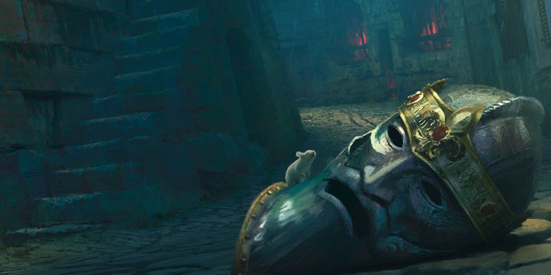

Le fidèle
Cet Arcana Unearthed présente deux nouvelles options qui permettent aux lanceurs de sorts d'exprimer leur foi. Le Pacte du chercheur est inspiré par Celestian, dieu des étoiles, de l'espace et des vagabonds de Greyhawk. C'est un pacte qui lie un occultiste à une divinité mystérieuse dédiée à la collecte des connaissances. Pour les magiciens, la tradition arcanique théurgie permet de créer un utilisateur de la magie dont l'utilisation des arcanes est guidée par les enseignements d'une divinité. Et cela permet d'expliquer pourquoi un dieu de la magie compte plus de clercs que de magiciens parmi ses disciples.
Patron d'occultiste : le chercheur
Votre patron est un être impénétrable qui parcourt le plan astral à la recherche de connaissances et de secrets. En retour pour les cadeaux de votre patron, vous parcourez le monde à la recherche de savoir que vous pouvez partager avec le chercheur. Votre patron peut être une divinité ou autre entité puissante dédiée à la connaissance ou aux savoirs oubliés. Celestian est un patron idéal pour une campagne dans Greyhawk, et a été l'inspiration de ce concept. Dans les Royaumes Oubliés, votre patron pourrait être Azouth ou Oghma. Aureon fait un excellent patron pour Eberron, tandis que dans Krynn et le cadre de campagne Dragonlance, Gilean est un bon choix pour le rôle du chercheur.
Liste de sorts étendue
Le chercheur permet de choisir parmi une liste de sorts étendue quand vous apprenez un sort d'occultiste. Les sorts suivants sont ajoutés à la liste de sorts d'occultiste pour vous.
| Niveau de sort |
Sorts |
| 1 | feuille morte, saut |
| 2 | lévitation, localisation d'objet |
| 3 | clairvoyance, communication à distance |
| 4 | oeil magique, localisation de créature |
| 5 | mythes et légendes, passe-muraille |
Aurore protectrice
À partir du niveau 1, vous pouvez invoquer le pouvoir du chercheur pour vous protéger contre les dommages. Par une action bonus, vous créez une aurore d'énergie brillante qui tourbillonne autour de vous. Jusqu'à la fin de votre prochain tour, vous gagnez une résistance à tous les dégâts, et si une créature hostile termine son tour dans un rayon de 3 mètres autour de vous, elle subit des dégâts radiants égaux à votre niveau d'occultiste + votre modificateur de Charisme. Une fois que vous utilisez cette capacité, vous ne pouvez pas l'utiliser à nouveau jusqu'à ce que vous ayez terminé un repos court ou long.
Faveur de pacte : Pacte de la Chaîne étoilée
Au niveau 3, un personnage dédié au chercheur peut choisir cette option au lieu de celles des Faveurs de pacte d'occultiste existantes. Le chercheur vous accorde une chaîne forgée à partir de lueurs d'étoiles, décoré de sept graines étincelantes de lumière. Tant que vous portez la chaîne sur vous, vous connaissez le sort augures et pouvez le lancer en tant que rituel. Le sort ne compte pas dans votre nombre de sorts connus. De plus, vous pouvez invoquer le pouvoir du chercheur pour obtenir un avantage sur un jet d'Intelligence lorsque vous portez cet objet. Une fois que vous avez utilisé cette capacité, vous devez terminer un repos court ou long avant de pouvoir l'utiliser à nouveau.
Si vous perdez votre chaîne étoilée, vous pouvez effectuer une cérémonie d'une heure pour en recevoir une autre du chercheur en remplacement. La cérémonie peut être effectuée pendant un repos court ou long, et elle détruit la chaîne précédente. La chaîne disparaît dans un éclair de lumière quand vous mourrez. La forme exacte de cet objet peut être différente en fonction de votre patron. La chaîne étoilée est inspirée par la divinité Celestian de Greyhawk.
Refuge astral
Au niveau 6, vous gagnez la possibilité d'entrer dans un refuge astral. Par une action, vous disparaissez du monde pendant un bref instant et entrez dans le plan astral, profitant de son caractère intemporel. Tant que vous êtes dans votre refuge astral, vous pouvez utiliser deux actions pour lancer des sorts qui ne ciblent que vous. Après avoir utilisé ces deux actions, vous revenez à l'endroit que vous occupiez et votre tour se termine.
Voyageur lointain
Au niveau 10, vous n'avez plus besoin de respirer, et vous gagnez la résistance aux dégâts de froid et de feu.
Isolement astral
À partir de niveau 14, vous gagnez la possibilité de vous isoler avec vos alliés sur le plan astral. En effectuant un rituel spécial durant 5 minutes, vous vous transportez avec jusqu'à dix autres créatures consentantes que vous pouvez voir dans le plan astral. Vous et ces créatures obtenez les avantages d'un repos court tout en étant isolés sur le plan astral. Vous revenez ensuite à l'endroit que vous occupiez lorsque vous avez utilisé cette capacité, sans que le temps ne se soit écoulé dans le monde.
Pendant ce repos court, vous et les créatures isolées pouvez faire usage de toutes les options disponibles au cours d'un repos, tant qu'elles n'affectent que vous et les créatures isolées. Une fois que vous avez utilisé cette capacité, vous devez terminer un repos long avant de pouvoir l'utiliser à nouveau.
Tradition arcanique : théurgie
Un certain nombre de divinités revendique la magie des arcanes comme leur domaine. Bien que l'idée d'un être divin embrassant une telle puissance puisse sembler contradictoire, la magie fait partie du tissu cosmogonique comme le vent, le feu, la foudre et toutes les autres forces primitives. Tout comme il y a des divinités de la mer et des dieux de la guerre, les arts arcaniques disposent de leurs propres patrons divins. Ces divinités ont souvent des clercs, mais de nombreux dieux de la magie imposent à leurs fidèles de s’imprégner également de l'étude de la magie. Ces magiciens religieux suivent la tradition arcanique de la théurgie, et sont généralement connus comme des théurges. Ces lanceurs de sorts sont aussi dévoués et savants que tout autre magicien, mais ils fusionnent leur étude des arcanes avec leurs enseignements religieux.
Inspiration divine
Lorsque vous sélectionnez cette tradition au niveau 2, choisissez un domaine divin dans la liste des domaines éligibles de votre divinité. En tant que variante, les domaines suivants sont thématiquement appropriés et facilement compatibles avec le concept théurgique :
- Connaissance
- Lumière
- Arcanes (issu du Sword Coast Adventurer's Guide)
Initié des arcanes
À partir du niveau 2, chaque fois que vous gagnez un niveau de magicien, vous pouvez choisir de remplacer l'un des sorts de magicien que vous ajoutez à votre grimoire par un sort de clerc du domaine choisi. Le sort doit être d'un niveau pour lequel vous possédez un emplacement de sort disponible. Si vous avez ajouté tous les sorts de votre domaine à votre grimoire, vous pouvez alors ensuite choisir d'ajouter n'importe quel autre sort de la liste des sorts de clerc. Le sort doit toujours être d'un niveau pour lequel vous possédez un emplacement disponible. Vous considérez tous les sorts de clerc que vous gagnez grâce à cette capacité comme des sorts de magicien, mais d'autres magiciens ne peuvent pas copier les sorts de clerc de votre grimoire dans leur propre grimoire.
Canalisation arcanique
Au niveau 2, vous gagnez la capacité de canaliser l'énergie des arcanes directement à partir de votre divinité, en utilisant cette énergie pour alimenter des effets magiques. Vous commencez avec deux effets : Arcanes divines et l'option Conduit divin accordée au niveau 2 par votre domaine choisi. Vous activez ce Conduit divin en utilisant votre capacité de Canalisation arcanique.
Lorsque vous utilisez votre Canalisation arcanique, vous choisissez l'effet que vous voulez créer. Vous devez ensuite terminer un repos court ou long pour utiliser à nouveau votre Canalisation arcanique. Certains effets de la Canalisation arcanique exigent des jets de sauvegarde. Lorsque vous utilisez de tels effets, le DD du jet de sauvegarde est égal au DD de sauvegarde de vos sorts de magicien.
Au niveau 6, vous pouvez utiliser votre Conduit divin deux fois entre les repos, et au niveau 18 vous pouvez l'utiliser trois fois. Lorsque vous avez terminé un repos court ou long, vous regagnez vos emplacements de sorts dépensés. Lorsque vous gagnez d'autres utilisations de Conduit divin dues à votre domaine, vous pouvez les activer en utilisant votre capacité de Canalisation arcanique.
Canalisation arcanique : arcanes divines
En tant qu’action bonus, vous dites une prière pour contrôler le flux de magie qui vous entoure. Le prochain sort que vous lancez aura un bonus de +2 à l'attaque ou au DD du jet de sauvegarde, selon le cas.
Acolyte des arcanes
Au niveau 6, vous gagnez le bénéfice du niveau 1 du domaine que vous avez choisi. Cependant, vous ne gagnez aucune maîtrise d'armes ou d'armures de votre domaine.
Prêtre des arcanes
Au niveau 10, vous gagnez le bénéfice du niveau 6 du domaine que vous avez choisi. Votre foi et votre compréhension de la magie vous permettent de plonger dans les secrets de votre dieu.
Grand prêtre des arcanes
Au niveau 14, vous gagnez le bénéfice du niveau 17 du domaine que vous avez choisi. Votre nature académique ainsi que votre compréhension de la magie et de la doctrine vous permettent de maîtriser cette capacité plus tôt qu’un clerc de votre domaine.

Écrit par Mike Mearls, traduit par Garruth et Baestir